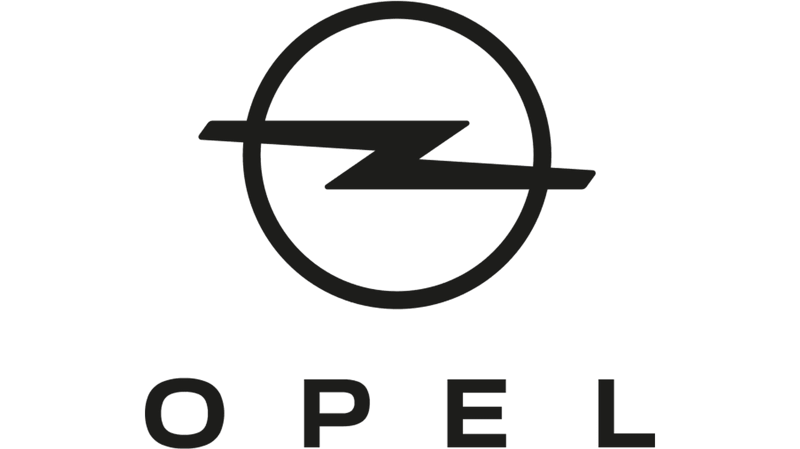
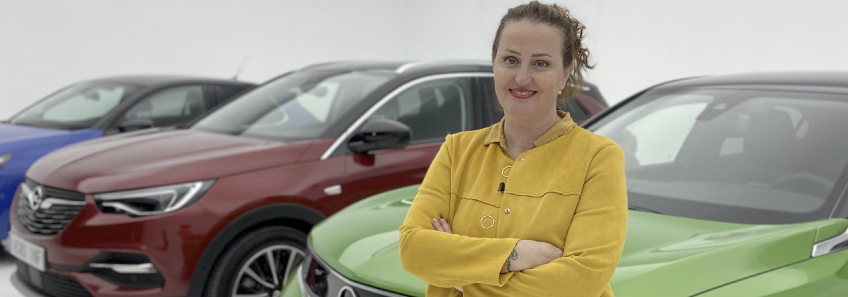

Nuevo Opel Mokka-E
¡Atrévete a ser diferente!
Puro y atrevido, define la nueva filosofía de diseño de la marca para la próxima década. Se inspira en el Opel Manta clásico, pero dando un toque diferente que recoge ideas incluso de las sneakers más atrevidas gracias a una batería de 50 Khw.
Un innovador puesto de conducción que integra dos pantallas panorámicas con un diseño exclusivo en el que priman la ergonomía y la claridad. Los diseñadores de Opel han dado una gran importancia a la desintoxicación digital.
Bajo el ciclo WLTP, la batería de 50 kWh ofrece una autonomía de hasta 332 kilómetros.
El nuevo Opel Mokka es el primer modelo de serie en lucir el nuevo frontal de la marca, el Opel Vizor. También el rediseñado logotipo del rayo, el Opel Blitz, y la denominación del modelo en la parte trasera alineada en el centro.
Motor de 100 kW (136 CV) con 260 Nm de par máximo. El conductor puede elegir entre tres modos de conducción: Normal, Eco y Sport.
0 ruidos, 0 vibraciones, 0 emisiones, 0 olores y 0 restricciones.
Un contenido de Auto Bild para:
"El nuevo Opel Mokka ha sido el primero en mostrs esa nueva cara de la marca" ROcio jurado, brand manager de opel
El nuevo Opel Mokka-E es una de las últimas incorporaciones a la oferta de la marca alemana con propulsion 100% eléctrica. Su aspecto y cualidades le han hecho obtener una gran acogida desde el principio y, para conocerlo en detalle y descubrir algunas cuestiones de la compañia, hemos hablado con Rocio Jurado, Brand Manager en Opel para su gama SUV.
Este nuevo modelo es el primero que trae consigo la nueva imagen de los modelos del fabricante, caracterizada por una mayor modernidad y frescura, de manera que cuenta con una importancia añadida para la firma: "El Mokka es el pionero y por ello tiene una especial relevancia para nosotros", apunta. De hecho, Jurado señala que ha sido el proyecto “con el que cualquier diseñador de vehículos hubiera soñado, pero también una gran responsabilidad, ya que el reto era crear un vehículo que reflejara la nueva filosofía de diseño de la marca para la próxima década”.
Esto hizo que el trabajo a realizar no fuera sencillo en absoluto. Aun así, la Brand Manager de Opel asegura que se han cumplido las expectativas tras haberse logrado un resultado inmejorable: “El equipo de Florian Theis hizo un trabajo excelente inspirándose por un lado en la tradición Opel -cogiendo muchas ideas del Opel Manta clásico- y, por otro lado, dando un toque totalmente diferente y disruptivo con lo que tenemos costumbre de ver. ¡Incluso se han inspirado en el diseño de sneakers!”, detalla.
¿Para quién es perfecto el Mokka-E?
Sin embargo, el trabajo realizado con este crossover va más allá de su aspecto y en conjunto se trata de un coche en el que destacan 4 claves concretas: diseño, tecnología, confort y seguridad. En definitiva, un vehículo con muchas virtudes para todo tipo de usuarios, pero que además puede ser el modelo perfecto para los clientes que la compañía califica de ‘electro-compatibles’. Es decir, aquellos “que dispongan de un punto de carga eléctrica en casa/oficina y que no hagan más de 200 km al día”, un porcentaje cada vez mayor si tenemos en cuenta la proliferación de los puntos de carga en España. “Muchísima gente puede cumplir estos requisitos y beneficiarse de las ventajas de un vehículo eléctrico”, apunta.
¿Y qué obtendrán en el día a día los usuarios que se hayan decidido por un Opel Mokka-E? Según Rocío Jurado, en el uso de este SUV destaca “el disfrute máximo en la conducción”. Tal y como añade, esto es así por el hecho de contar con “un motor que entrega toda la potencia desde el minuto uno, además una conducción relajada con los cinco ceros: 0 ruidos, 0 vibraciones, 0 emisiones, 0 olores y 0 restricciones”.
¿Para quién es perfecto el Mokka-E?
Con todo, parece que el SUV eléctrico de Opel trae consigo una buena combinación de elementos que puede beneficiarle en el mercado. En Alemania se agotaron las primeras unidades en tiempo récord y, al ser preguntada por su acogida en España, Jurado menciona que las sensaciones también están siendo positivas aquí por el momento: “Tenemos una importante cartera de pedidos de cliente esperando a ser producidos. La acogida en España está siendo excelente”. No obstante, añade que habrá que tener en cuenta más factores, ya que el Mokka se sitúa en el sector los SUV de tamaño medio, actualmente en alza. “Aquí competirá con modelos como el T-Roc de VW o el Toyota C-HR, aportando como ventaja una versión 100% eléctrica”, declara.
De hecho, el factor de la propulsión eléctrica tiene una gran importancia ya que “el compromiso de la marca y del grupo de tener una gama totalmente electrificada en 2024 ha sido determinante”, según Rocío Jurado. Para entonces, el plan es contar en toda la gama al menos con una versión 100% eléctrica o híbrida enchufable, ofreciendo así más opciones a los clientes. “Hoy por hoy, ya contamos con el 80% de la gama con algún tipo de electrificación”, agrega.
"La electrificación está en marcha y es imparable dentro de Opel"
En este momento, Jurado menciona que, más allá de coches de combustión o eléctricos, ofrecen “soluciones intermedias como el Vivaro-e Hydrogen recientemente presentado. Un vehículo comercial eléctrico de pila de combustible”. No obstante, apunta que “la electrificación está en marcha y es imparable dentro de Opel”, ya que es algo en lo que han estado trabajando durante muchos años “y que no es el futuro, sino que es ya el presente”.
Parece que este será uno de los puntos principales de la hoja de ruta de la marca, por lo que ¿ya no habrá sitio para los vehículos con motor térmico? En este aspecto, la Brand Manager de Opel menciona: “Por ahora sí. La demanda de vehículos térmicos sigue siendo alta en nuestro país, si bien procuramos que nuestros motores térmicos sean muy eficientes y respetuosos con el medioambiente en cuanto a bajas emisiones y consumos contenidos”.
En cualquier caso, seguirán sucediéndose cambios en el fabricante y también en el automovilismo. Centrándonos en Opel, nos preguntamos si el Mokka-E influenciará a futuros coches de la firma y si aún habrá novedades interesantes en un futuro no muy lejano. Ante esto, Rocío Jurado lo tiene claro: “Definitivamente sí. Es el primero -con el nuevo lenguaje de diseño de la marca-, pero no el último. Aún tenemos muchas sorpresas pendientes”.